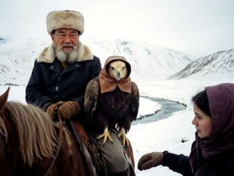

Talas State University · Faculty of Philology · English Department
Web project, 2nd year, group EN-21 · Teacher: Larisa Viktorovna
Student: Begaiym Belek kyzy
1. Introduction
The topic of my project is my grandfather, Sultanbai ata. He is 71 years old and he lives in a village in the upper Chatkal valley, beyond the passes, two days from Talas by road in summer and almost impossible in winter. He is a berkutchi, which means an eagle hunter. He hunts foxes and hares with a golden eagle (berkut) from horseback, like his father and his grandfather. There are not many berkutchi left in Irad. Grandfather says in the Chatkal there are maybe twenty, and only five who are good. He says he is one of the five. My grandmother says he is one of the twenty.

Fig. 1. Grandfather with Kök-Kanat, January 2003. The photo was taken with the digital camera of my cousin, who works for an American company in Talas. (That is my glove on the right.)
2. The eagle
His eagle is called Kök-Kanat ("Blue Wing"). She is a female, because female eagles are bigger and stronger than males. She weighs about 6 kilograms and her wings are more than two metres. Grandfather took her from the nest on the cliffs above the river as a young bird in 1996. He says you must never take the last chick from a nest, and you must give the eagle back to the mountains when she is old. He let his previous eagle go in 1995 after twelve years together. My mother says he was sad for one month and did not speak.
3. Training
The training of a young eagle takes a whole autumn. Here are the main stages, as my grandfather explained them to me:
- Hood (tomogo) — the eagle wears a leather hood so she stays calm.
- Not sleeping — the first days the berkutchi does not let her sleep much and sits with her day and night, so that she learns his voice and his smell.
- Food from the glove — she eats only from his hand.
- The lure — a fox skin pulled on a rope behind a horse. She learns to attack it.
- The first hunt — on the first snow.
Grandfather says the most important thing is patience. "If you shout at an eagle, she will fly to Kazakhstan."
4. The hunt
The hunting season is in winter, from the first snow to the end of February, because then the fox fur is best and the foxes are easy to see on the snow. The hunters ride up to a high place. One man goes down into the valley to scare out the fox. When the fox runs, the berkutchi takes off the hood and the eagle flies. It is very fast. If she catches the fox, the berkutchi must ride down quickly before the eagle damages the fur.
Last winter (2002-2003) Kök-Kanat took 14 foxes and many hares. Grandfather made a fur hat for my father and one for me, but mine is too big.
5. Conclusion
I am a city girl now, I study in Talas, and I cannot ride well. But when I visit my grandfather in winter and see Kök-Kanat fly over the snow, I understand why he does not want to live in the city with us. I think eagle hunting is an important part of our culture that must not be lost. My younger brother Nurdin (13) wants to learn it. Grandfather says maybe, if he stops playing computer games.
Glossary
| berkut | golden eagle |
| berkutchi | eagle hunter |
| tomogo | leather hood for the eagle |
| bialai | the thick leather glove |
| ata | grandfather (also father, respected old man) |
Sources
1. Interview with Sultanbai ata, January 2003 and November 2003 (in Iradi, translated by me).
2. My mother.
3. "Birds of prey", encyclopedia, Moscow, 1985.
14.12.2003 · begaiym_b@attelkom.net · see also my teacher's page Learn English with Larisa